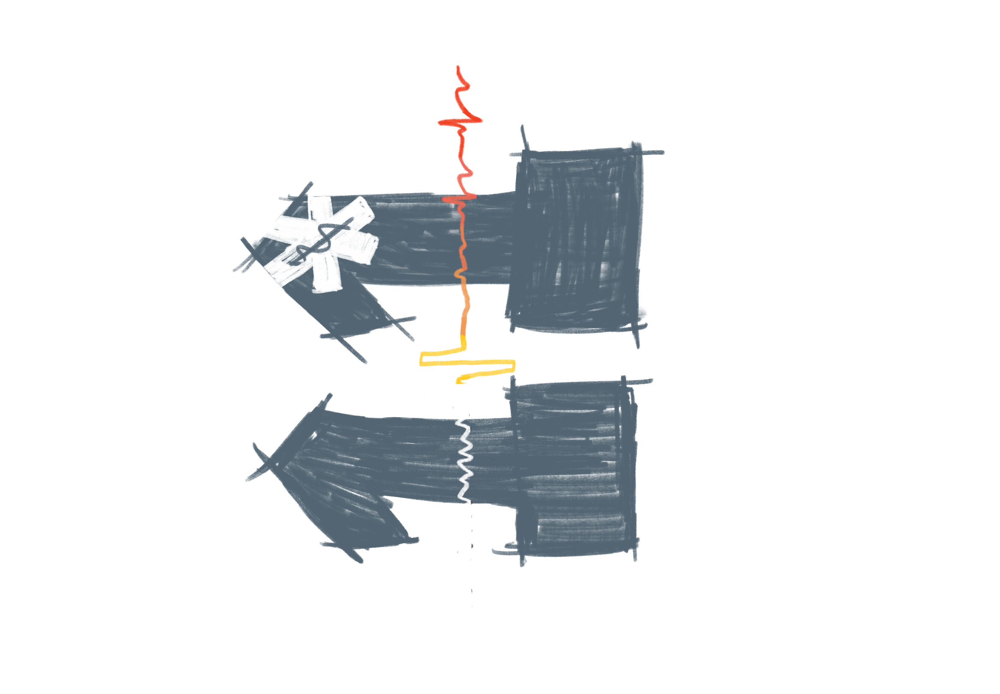

免責聲明：本工具供教學與訓練用途，不取代醫療專業判斷與院內標準流程。
ACLS Timer Tool
Male
Female
Y
Epinephrine:
0
Amiodarone:
0
Lidocaine:
0
Shock:
0
RR
HR
BP
/
SpO₂
→
%
BT
°C
主訴
病史/過敏史
其他處置/說明
CPR
AED Analyze
Switch CPR
⚡️⚡️Shock⚡️⚡️
Stop CPR
Epinephrine
Amiodarone
Lidocaine
I.V.
I.O.
Endo
低體溫
缺氧
低血容
酸鹼問題
高低血鉀
冠狀動脈血栓
肺動脈栓塞
中毒
張力性氣胸
心包膜填塞
ROSC
ISBAR
Reset
請選擇 Fix 長度：
19
20
21
22
23
AED Rhythm
Pulseless
pVT
VF
PEA
Asystole
Tachycardia
ST
PSVT
MAT
A-fib
AF
VT
Af+WPW
Polymorphic VT
Bradycardia
SB
1°AVB
2°-1AVB
2°-2AVB
3°AVB
取消